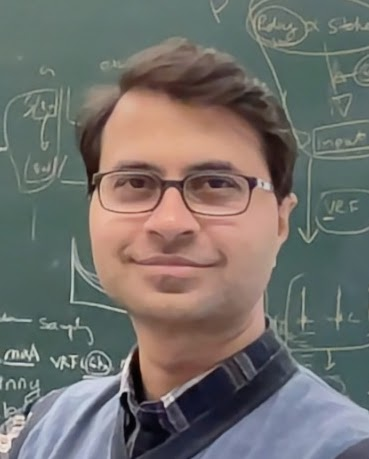
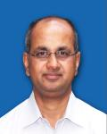
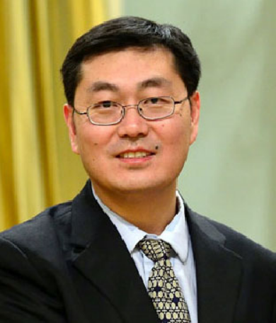
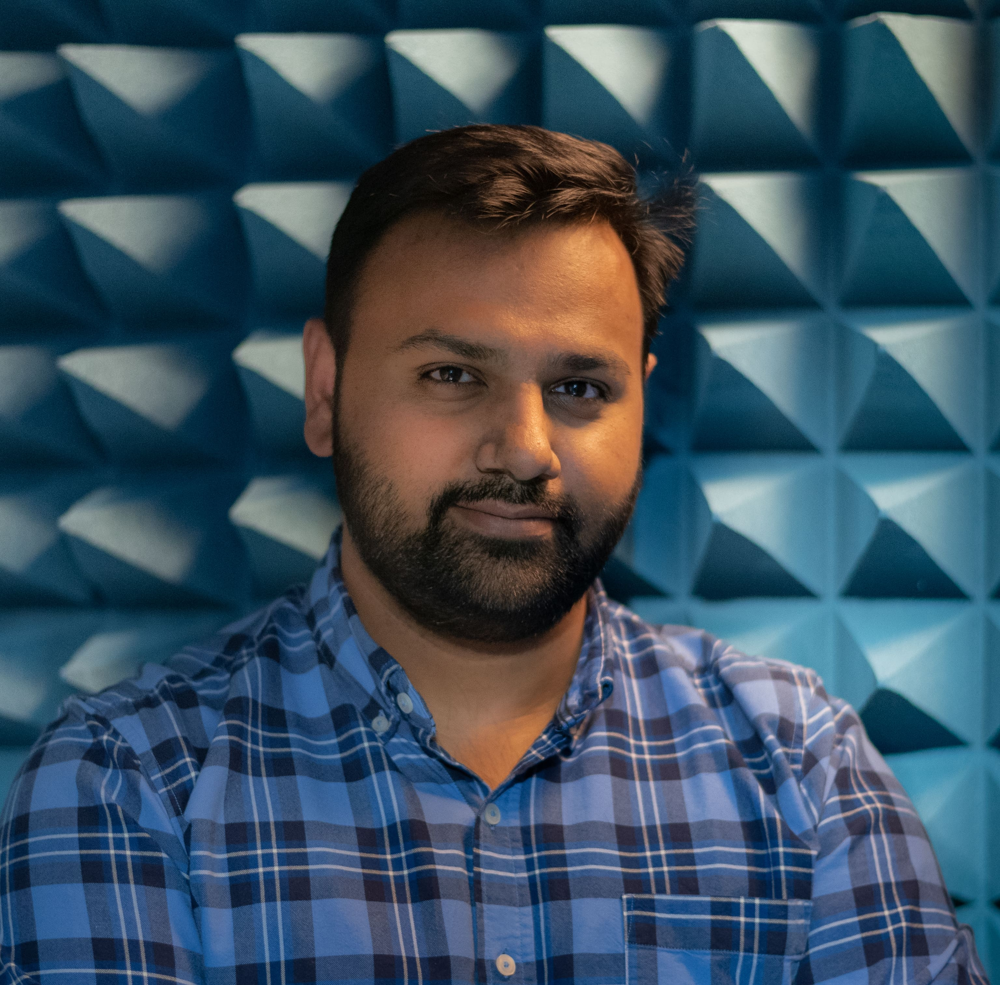
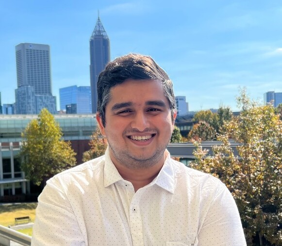

Schedule
| Date and Time | Speaker Information |
|---|---|
| Nov 28, 2024 16:30 - 17:00 UTC |
Tariq Elahi, Assistant Professor, University of Edinburgh, United KingdomBio: Dr Tariq Elahi is assistant professor in Security and Privacy where he heads the Networks & Systems Security & Privacy Lab. He has made significant contributions to the fields of anonymous communications (ACN), censorship resistance (CRS), and privacy-preserving data analytics. Over his academic career he has developed his research agenda for the systematic design and analysis of privacy building blocks, systems, and networks. His work has identified system weaknesses and produced designs that have subsequently been adopted in the real-world.
Talk Title: LEO for Privacy. Abstract: Satellite Internet enabled by LEO constellations like Starlink and OneWeb brings new degrees of connectivity heretofore unobtainable at scale. With these advances come the inherent and classic privacy and security risks that we have come to accept from the terrestrial Internet such as surveillance (by both legal and criminal entities) and censorship. Privacy enhancing technologies such as Tor help to mitigate these risks, but their use over LEO is still unexplored and underdeveloped.
|
| Nov 28, 2024 16:00 - 16:30 UTC |
P G Diwakar, ISRO Chair Professor, National Institute of Advanced Studies, IndiaBio: Diwakar holds the position of “ISRO Chair Professor” at National Institute of Advanced Studies (NIAS) and works on research projects related to space technology, particularly related to data processing from Earth Observation Satellites and Geospatial Technologies.
Talk Title: Geospatial data analytics and its applications. Abstract: The world today is much more complex than ever before. Unless combinations of technologies are used, it is quite impossible to have a comfortable life. Unlike earlier days we have many tech updates almost on a daily basis on various aspects of comfortable living. The important aspects of sustainable living calls for conserving and preserving our natural resources and environment. The land, water, ocean, energy and atmosphere are the most important 5 elements that all humans depend upon for everything on earth. There are many important aspects of how these can be managed and sustained with well planned approach general aspects of livelihood. Space technology provides unique opportunities to help in better planning and management of all the resources on earth. My talk shall be addressing these in terms of Geospatial technology usage that helps us to understand various aspects of natural resources management. Many of these are already being practiced in India and the same shall be presented as part of my talk. |
| June 25, 2024 15:30 - 16:00 UTC |
Jianping Pan, Professor, University of Victoria, British Columbia, CanadaIEEE VTS SAGW Seminar SeriesBio: Dr Jianping Pan is a professor of computer science at the University of Victoria, British Columbia, Canada. He received his Bachelor's and PhD degrees in computer science from Southeast University, Nanjing, Jiangsu, China, and he did his postdoctoral research at the University of Waterloo, Ontario, Canada. He also worked at Fujitsu Labs and NTT Labs. His area of specialization is computer networks and distributed systems, and his current research interests include protocols for advanced networking, performance analysis of networked systems, and applied network security. He received IEICE Best Paper Award in 2009, Telecommunications Advancement Foundation's Telesys Award in 2010, WCSP 2011 Best Paper Award, IEEE Globecom 2011 Best Paper Award, JSPS Invitation Fellowship in 2012, IEEE ICC 2013 Best Paper Award, NSERC DAS Award in 2016, IEEE ICDCS 2021 Best Poster Award and DND/NSERC DGS Award in 2021, and has been serving on the technical program committees of major computer communications and networking conferences including IEEE INFOCOM, ICC, Globecom, WCNC and CCNC. He was the Ad Hoc and Sensor Networking Symposium Co-Chair of IEEE Globecom 2012 and an Associate Editor of IEEE Transactions on Vehicular Technology. He is a senior member of the ACM and a Fellow of the IEEE. Talk Title: Measuring the Satellite Links of LEO Networks Abstract: Low-earth-orbit (LEO) satellite networks have become very popular in recent years, exemplified by Starlink, OneWeb, Kuiper and Telesat, due to the dramatically reduced launch cost and increased demand for connectivity anytime, anywhere. After an exploration of Starlink access, core and backbone networks, in this talk we focus on the satellite access network (SAN) of Starlink around the world. In particular, we measure the access performance in terms of one-way delay and round-trip time from user terminal (UT) to ground station (GS) and point-of-presence (PoP), both inside-out and outside-in, and even on inactive dishes. It reveals the unique characteristics of Starlink SAN in terms of satellite-GS scheduling, media access control and user contention, and sheds light on the challenges and opportunities for network protocols and applications. We will also compare two leading SAN networks, i.e., Starlink and OneWeb, according to their targeted customer bases and corresponding network design architecture and performance, as well as highlighting a few emerging testbeds. |
| June 25, 2024 15:00 - 15:30 UTC |
Sharif Islam, Postdoctoral Research Associate, Media Lab, MITBio: Sharif Islam is a postdoctoral research associate within the Space Enabled research group at MIT Media Lab. His work involves the application of satellite earth observations and geospatial modeling tools and techniques to analyze satellite data, facilitating a deeper understanding of environmental changes and their consequences. Sharif is passionately dedicated to research focused on climate and environmental justice. His ongoing research efforts are currently investigating a range of environmental issues in various regions, including South Asia, Angola in Africa, Brazil in South America, and the United States. Talk Title: Using Earth Observation Technologies to Support Sustainable Development in Developing Countries Abstract: Earth Observation (EO) technologies, such as satellites and remote sensing, provide a comprehensive view of the Earth's surface, enabling real-time monitoring and data acquisition. Within the environmental domain, EO facilitates tracking land use changes, deforestation, and biodiversity, thereby supporting evidence-based conservation efforts. Social factors, encompassing population dynamics and urbanization trends, can be analyzed to inform inclusive and resilient development strategies. EO also assumes a crucial role in policy formulation by furnishing accurate and up-to-date information on environmental conditions, thereby supporting informed decision-making. Furthermore, technical aspects, like infrastructure development and resource management, benefit from EO's ability to provide detailed insights into terrain characteristics and natural resource distribution. The integration of Earth Observation across these domains yields a comprehensive understanding of the intricate interplay between environmental, social, policy, and technical factors, fostering a more sustainable and informed approach to development initiatives. In this presentation, I will discuss our lab's work on how we are using satellite earth observation technologies to support sustainable development in developing countries. |
| Mar 20, 2024 16:30 - 17:00 UTC |
Jianchuan Liu, Full Professor in the School of Computing Science, Simon Fraser University

|
| Mar 20, 2024 16:00 - 16:30 UTC |
Nitinder Mohan, Postdoctoral fellow in Chair of Connected Mobility, Technical University of Munich, GermanyBio: Nitinder Mohan is a senior researcher in the Chair of Connected Mobility at Technical University of Munich, Germany. His research interests are in scalable edge computing orchestration, next-generation network systems for reliable communication in mobile environments, satellite networks, multipath communications, and others — and wide-scale Internet measurements. He received his Ph.D. from University of Helsinki and M.Tech. from IIIT Delhi. His Ph.D. dissertation received "Outstanding Ph.D. Dissertation Award 2020" by the IEEE Technical Committee of Scalable Computing (TCSC). He also the co-founder and co-organizer of IEEE PerFail and ACM LEO-NET workshop series. Talk Title: A Multifaceted Look at Starlink Network Performance Abstract: Starlink, with its expansive constellation size, is fundamentally transforming global Internet connectivity — positioning itself as a potential "global ISP" that can end global Internet monopolies and close connectivity gaps in remote and disaster-affected areas. Prior investigations into Starlink's network performance have been region-specific and lack a holistic understanding of its global operations. In this talk, I will unveil findings from our first extensive, longitudinal study of Starlink's network performance. Our analysis provides a global overview of Starlink's bandwidth and latency metrics, identifying key factors that influence its service quality. Additionally, I will explore Starlink's dynamic reconfiguration of its satellite links and examine the network's capability to support real-time applications such as video conferencing and cloud gaming. |
| Dec 13, 2023 15:00 UTC |
theNetworkingChannel panel discussion on LEO Satellite Mega Constellations – the `New Space’ potentialReusable boosters and compact satellite design have made it viable to deploy thousands of low Earth Orbit (LEO) satellites offering broadband Internet, imagery, IoT, and other services from space. Inter-satellite lasers and low latencies of LEO make communication efficient. The panelists will discuss these opportunities alongside the challenges that might arise due to fast-moving LEO satellites, transient up/down links, weather and interference issues, ground station scarcity, and many other factors. They will also touch upon the interesting systems research challenges. Speakers: Brandon Lucia [CMU], Ranveer Chandra [Microsoft], Lili Qiu [Microsoft Research Asia, UT Austin], Cristel Pelsser[UC Louvain], Aravindh Raman [Sky, Telefonica Research], François Michel [UCLouvain] Organizers: Jim Kurose [UMass], Nishanth Sastry [USurrey], Debopam Bhattacherjee [Microsoft Research India], Mohamed Kassem [USurrey] Link to the event page |
| Sep 27, 2023 12:30 - 13:00 UTC |
Steve Song, Policy Advisor with the Mozilla Corporation and the Association for Progressive CommunicationsBio: Steve Song is a Policy Advisor with the Mozilla Corporation; a consultant on access regulation and policy to the Association for Progressive Communications (APC); and, a research partner with theNetwork Startup Resource Center (NSRC). His blog, manypossibilities dot net, is a popular destination for anyone working on African telecommunications and internet issues. Since 2009, Steve has been actively maintaining public maps of undersea and terrestrial fibre optic infrastructure in Africa. He is also the founder of Village Telco, a social enterprise that manufactured low-cost WiFi mesh VoIP technologies to deliver affordable voice and Internet service inunder-serviced areas. Previously, Steve worked at the International Development Research Centre (IDRC) where he led the organization's ICTs for Development program in Africa, funding research into the transformational potential of ICTs. Talk Title: Starlink: Celestial Savior, Corporate Conquest, or both? Abstract: Much has been written about the potential of LEO satellites to deliver affordable connectivity to the unserved but the focus has tended to be on the technological innovation that Starlink and other constellations represent. This talk will attempt to weigh the pros and cons of Starlink connectivity from the point of view of digital empowerment in unserved communities. |
| Sep 27, 2023 12:00 - 12:30 UTC |
Zeqi Lai, Assistant Professor , Institute for Network Sciences and Cyberspace, Tsinghua UniversityBio: Zeqi Lai is an assistant professor at the Institute for Network Sciences and Cyberspace, Tsinghua University. Before joining Tsinghua University, he was a senior researcher at Tencent Media Lab from 2018 to 2019 and developed the network protocols and congestion control algorithms for WeMeet/VooV, a large-scale commercial videoconferencing application. He received his Ph.D. in Computer Science from Tsinghua University in 2018 and B.E. in Computer Science and Engineering from the University of Electronic Science and Technology of China in 2013. He was a visiting scholar in the School of Electrical and Computer Engineering, Purdue University from 2016 to 2017. His research interests include computer networking, wireless and mobile computing, video streaming, integrated space and terrestrial networks. His works are published at conferences or journals such as ACM MobiCom, USENIX NSDI, IEEE INFOCOM, IEEE ICNP, IEEE ToN, and IEEE TMC. Talk Title: Megaconstellations in Your Office: Rapid Prototyping for Future Integrated Space and Terrestrial Networks Abstract: We are entering a new era of satellite Internet. Future integrated space and terrestrial networks (ISTN) not only hold new opportunities for pervasive, low-latency Internet services but also involve new challenges caused by satellite dynamics on a global scale. It should be helpful for researchers to run various experiments to explore new problems in ISTNs systematically. In this talk, we introduce StarryNet, a novel experimentation framework that enables researchers to build experimental network environments mimicking satellite dynamics and network behaviors of large-scale ISTNs. StarryNet leverages a real-data-driven, lightweight emulation-aided approach to build a digital twin of physical ISTNs in a laboratory setting. We will show StarryNet’s effectiveness and flexibility to support various space-terrestrial networking experiments. |
| Apr 27, 2023 13:30 - 14:00 UTC |
Mike Puchol, Co-founder & CTO at Poa Internet (Kenya)Bio: Mike Puchol is a seasoned technologist and entrepreneur with a diverse background in aeronautical and mechanical engineering, software and hardware development, wireless communications, and security. As the CTO and co-founder of Poa! Internet, Mike has played a key role in Kenya's largest low-cost ISP, serving underprivileged communities with affordable broadband access. Poa's innovative approach to technology, including the integration of fiber, wireless, and free-space optics, caused it to win the prestigious Africa50 Innovation Challenge in 2020. Talk Title: LEO constellations: leapfrogging connectivity issues in the rest of Africa Abstract: On lessons learned from operating a WISP in Africa, and how LEO constellations could help some of the pain points experienced over the past eight years. |
| Apr 27, 2023 13:00 - 13:30 UTC |
Arashmid Akhavain, Leader of advanced networking research at Huawei Canada Research Centre
Bio: Arashmid Akhavain is a network and system architect, a research engineer, and the leader of the Advanced Networking Research team under the Wireless Systems Division at Huawei Canada Research Centre. Talk Title: Non Terrestrial Networks: Laying out the foundation for ubiquitous network coverage Abstract: The advent of technologies such as Evolved Expendable Launch Vehicles (EELV), EELV Secondary Payload Adapter (ESPA), and reusable rockets has driven the launching cost of satellites down which when combined with the recent progress in satellite design makes satellite networks an attractive method for extending mobile and broadband services to everywhere on earth. |
| Feb 24, 2023 17:00 - 17:30 UTC |
Dan York, Director, Internet Technology, at the Internet SocietyBio: Dan York is the Director, Internet Technology, at the Internet Society and in 2022 led the organization's Low Earth Orbit (LEO) satellite project, seeking to understand the benefits and challenges of this new way to provide Internet access. With the Internet Society, Dan has also had roles involving DNS security, web security, TLS, IPv6, communications, IETF participation, and more. Prior to joining the Internet Society in 2011, Dan spent over 10 years working with Voice-over-IP (VoIP) security and was involved with Linux and open source technologies. Since the mid-1980's Dan has been working with online communication technologies and helping businesses and organizations understand how to use and participate in those new media. Dan frequently presents at conferences, has authored multiple books, participates in several podcasts, and writes extensively online. More info can be found at https://danyork.me Talk Title: Technology and Policy Questions We All Must Ask As More LEO Systems Launch Abstract: Companies such as SpaceX, OneWeb, Amazon, Telesat, and many others are racing to launch large systems of Low Earth Orbit satellites (LEOs) to provide Internet access. While they can help bridge the digital divide, particularly in rural regions, they could put Internet access into the hands of a few large companies and introduce new security and privacy concerns. What are the opportunities with LEO systems? What are the concerns that regulators, policy makers, technologists, and individuals should be thinking about? How can we use LEO systems to connect more people, while ensuring the Internet remains open, globally connected, secure and trustworthy? The Internet Society, a global nonprofit focused on building a bigger, stronger Internet for everyone, researched LEO systems in 2022. Dan York, leader of the 2022 project, will explain what they found, how secure the systems may or may not be, and most importantly, what questions we all need to be asking as these systems expand. |
| Feb 24, 2023 16:30 - 17:00 UTC |
Vaibhav Bhosale, PhD Student at Georgia TechBio: Vaibhav Bhosale is a second-year Ph.D. student at Georgia Tech. His research is focused on building systems and networking solutions for LEO satellite networks. His main research agenda is to build software abstractions that can enable application developers and users to use this new frontier of computing seamlessly. He has explored different aspects related to LEO satellite networks such as application deployment, route variability, and cellular deployment. He completed his undergraduate studies at the Indian Institute of Technology Bombay (IITB) and his master's at Georgia Tech and has interned at Microsoft AfO, Mediatek, and IBM in the past. Talk Title: Enabling the LEO Satellite Edge Ecosystem Abstract: The rapid increase in the number of Low Earth Orbit (LEO) satellites has created a unique opportunity to provide ubiquitous access to compute resources across the globe. However, for the LEO satellites to become a new edge infrastructure, it is necessary to address the dynamism caused due to the mobility of the satellites (the LEO edge nodes). In this talk, I'll first contrast a LEO edge ecosystem with the current terrestrial edge/cloud ecosystem highlighting the specific gaps in abstractions and orchestration system design. I'll then present the design of a system that can hide the complexities of the dynamic nature of LEO satellites to enable 'LEO Edge as a Service'. |
| Dec 14, 2022 16:00 - 16:30 UTC |
Maurizio Vanotti, VP of Global New Markets, OneWebBio: Maurizio Vanotti, VP of Global New Markets, is responsible for bundling connectivity with the Big-Tech ecosystem. At OneWeb he also led the initiation of the Gen2 programme and shaped the company’s Responsible Space initiative. Prior to that, he was C-level executive of a PE-backed company leading strategy and operations in Europe and advisor to VCs investment strategies in technology sectors. He started his career at OHB-I, before becoming Head of Engineering Department and Head of the Telecommunication (SSTL) where he delivered more than 20 missions in orbit. Maurizio is a former Navy Officer. Talk Title: Innovation in Constellation Programmes |
| Dec 14, 2022 15:30 - 16:00 UTC |
Prof. Deepak Vasisht, UIUC
Bio: Deepak Vasisht is an Assistant Professor in Computer Science at the University of Illinois at Urbana Champaign. His research focuses on mobile computing and wireless networking, specializing in how next generation networking systems – satellite networks, 5G/6G, in-body networks, and others– can solve human-critical problems in different application areas including healthcare, smart homes, and agriculture. Deepak’s research on Internet-of-Things systems for agriculture, in Project FarmBeats (Microsoft Azure FarmBeats), has been deployed across farms in United States, India, and Africa. His work has been featured in the Economist, IEEE Spectrum, BBC, MIT News, World Economic Forum, Daily Mail, and CBC among others. Prof. Vasisht received his B. Tech. from IIT Delhi and Ph.D. from MIT. At IIT Delhi, he was awarded the President’s Gold Medal. In 2021, IIT Delhi named him a Graduate of the Last Decade. His Ph.D. dissertation received the ACM SIGCOMM Doctoral Dissertation award in 2019. He is a recipient of the Microsoft Research Ph.D. Fellowship, and an ACM SIGCOMM best paper award. Talk Title: Near-realtime Insights from Earth Observation Satellites Abstract: Large constellations of low Earth orbit satellites promise to provide frequent high resolution Earth imagery. Such constellations collect terabytes of data that needs to be shipped to Earth. Getting this data to Earth is challenging and can often take several hours to days before an insight is delivered to the end user. In this talk, I will discuss the networking and compute bottlenecks that cause such large delays. I will also present new distributed networking and compute architectures that can remove such bottlenecks to deliver near-realtime insights from imagery collected using Earth observation satellites. |